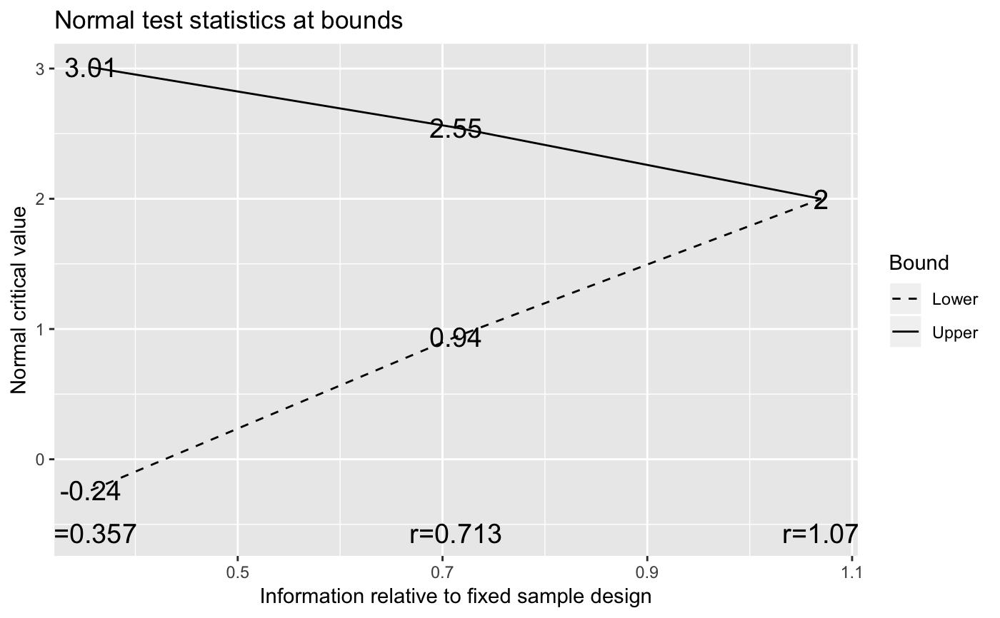
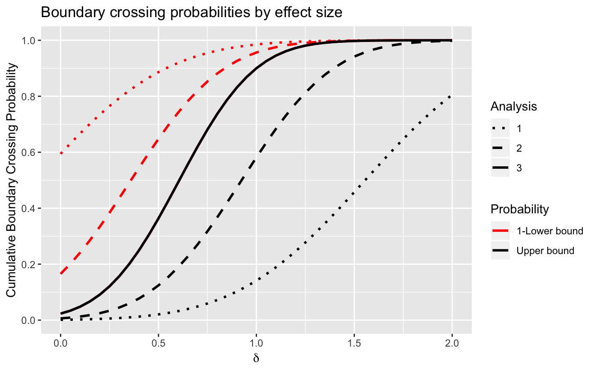

Boundary Crossing Probabilities
gsProbability.RdComputes power/Type I error and expected sample size for a group sequential
design across a selected set of parameter values for a given set of analyses
and boundaries. The print function has been extended using
print.gsProbability to print gsProbability objects; see
examples.
Depending on the calling sequence, an object of class gsProbability
or class gsDesign is returned. If it is of class gsDesign then
the members of the object will be the same as described in
gsDesign. If d is input as NULL (the default),
all other arguments (other than r) must be specified and an object of
class gsProbability is returned. If d is passed as an object
of class gsProbability or gsDesign the only other argument
required is theta; the object returned has the same class as the
input d. On output, the values of theta input to
gsProbability will be the parameter values for which the design is
characterized.
gsProbability(k = 0, theta, n.I, a, b, r = 18, d = NULL, overrun = 0) # S3 method for gsProbability print(x, ...)
Arguments
| k | Number of analyses planned, including interim and final. |
|---|---|
| theta | Vector of standardized effect sizes for which boundary crossing probabilities are to be computed. |
| n.I | Sample size or relative sample size at analyses; vector of length
k. See |
| a | Lower bound cutoffs (z-values) for futility or harm at each analysis, vector of length k. |
| b | Upper bound cutoffs (z-values) for futility at each analysis; vector of length k. |
| r | Control for grid as in Jennison and Turnbull (2000); default is 18, range is 1 to 80. Normally this will not be changed by the user. |
| d | If not |
| overrun | Scalar or vector of length |
| x | An item of class |
| … | Not implemented (here for compatibility with generic print input). |
Value
As input.
As input.
As input.
A list containing two elements: bound is as input in
a and prob is a matrix of boundary crossing probabilities.
Element i,j contains the boundary crossing probability at analysis
i for the j-th element of theta input. All boundary
crossing is assumed to be binding for this computation; that is, the trial
must stop if a boundary is crossed.
A list of the same form as
lower containing the upper bound and upper boundary crossing
probabilities.
A vector of the same length as theta
containing expected sample sizes for the trial design corresponding to each
value in the vector theta.
As input.
Note
The manual is not linked to this help file, but is available in library/gsdesign/doc/gsDesignManual.pdf in the directory where R is installed.
References
Jennison C and Turnbull BW (2000), Group Sequential Methods with Applications to Clinical Trials. Boca Raton: Chapman and Hall.
See also
plot.gsDesign, gsDesign,
gsDesign package overview
Examples
# making a gsDesign object first may be easiest... x <- gsDesign() # take a look at it x#> Asymmetric two-sided group sequential design with #> 90 % power and 2.5 % Type I Error. #> Upper bound spending computations assume #> trial continues if lower bound is crossed. #> #> Sample #> Size ----Lower bounds---- ----Upper bounds----- #> Analysis Ratio* Z Nominal p Spend+ Z Nominal p Spend++ #> 1 0.357 -0.24 0.4057 0.0148 3.01 0.0013 0.0013 #> 2 0.713 0.94 0.8267 0.0289 2.55 0.0054 0.0049 #> 3 1.070 2.00 0.9772 0.0563 2.00 0.0228 0.0188 #> Total 0.1000 0.0250 #> + lower bound beta spending (under H1): #> Hwang-Shih-DeCani spending function with gamma = -2. #> ++ alpha spending: #> Hwang-Shih-DeCani spending function with gamma = -4. #> * Sample size ratio compared to fixed design with no interim #> #> Boundary crossing probabilities and expected sample size #> assume any cross stops the trial #> #> Upper boundary (power or Type I Error) #> Analysis #> Theta 1 2 3 Total E{N} #> 0.0000 0.0013 0.0049 0.0171 0.0233 0.6249 #> 3.2415 0.1412 0.4403 0.3185 0.9000 0.7913 #> #> Lower boundary (futility or Type II Error) #> Analysis #> Theta 1 2 3 Total #> 0.0000 0.4057 0.4290 0.1420 0.9767 #> 3.2415 0.0148 0.0289 0.0563 0.1000# now add boundary crossing probabilities and # expected sample size for more theta values y <- gsProbability(d = x, theta = x$delta * seq(0, 2, .25)) class(y)#> [1] "gsDesign"# note that "y" below is equivalent to print(y) and # print.gsProbability(y) y#> Asymmetric two-sided group sequential design with #> 90 % power and 2.5 % Type I Error. #> Upper bound spending computations assume #> trial continues if lower bound is crossed. #> #> Sample #> Size ----Lower bounds---- ----Upper bounds----- #> Analysis Ratio* Z Nominal p Spend+ Z Nominal p Spend++ #> 1 0.357 -0.24 0.4057 0.0148 3.01 0.0013 0.0013 #> 2 0.713 0.94 0.8267 0.0289 2.55 0.0054 0.0049 #> 3 1.070 2.00 0.9772 0.0563 2.00 0.0228 0.0188 #> Total 0.1000 0.0250 #> + lower bound beta spending (under H1): #> Hwang-Shih-DeCani spending function with gamma = -2. #> ++ alpha spending: #> Hwang-Shih-DeCani spending function with gamma = -4. #> * Sample size ratio compared to fixed design with no interim #> #> Boundary crossing probabilities and expected sample size #> assume any cross stops the trial #> #> Upper boundary (power or Type I Error) #> Analysis #> Theta 1 2 3 Total E{N} #> 0.0000 0.0013 0.0049 0.0171 0.0233 0.6249 #> 0.8104 0.0058 0.0279 0.0872 0.1209 0.7523 #> 1.6208 0.0205 0.1038 0.2393 0.3636 0.8520 #> 2.4311 0.0595 0.2579 0.3636 0.6810 0.8668 #> 3.2415 0.1412 0.4403 0.3185 0.9000 0.7913 #> 4.0519 0.2773 0.5353 0.1684 0.9810 0.6765 #> 4.8623 0.4574 0.4844 0.0559 0.9976 0.5701 #> 5.6727 0.6469 0.3410 0.0119 0.9998 0.4868 #> 6.4830 0.8053 0.1930 0.0016 1.0000 0.4266 #> #> Lower boundary (futility or Type II Error) #> Analysis #> Theta 1 2 3 Total #> 0.0000 0.4057 0.4290 0.1420 0.9767 #> 0.8104 0.2349 0.3812 0.2630 0.8791 #> 1.6208 0.1138 0.2385 0.2841 0.6364 #> 2.4311 0.0455 0.1017 0.1718 0.3190 #> 3.2415 0.0148 0.0289 0.0563 0.1000 #> 4.0519 0.0039 0.0054 0.0097 0.0190 #> 4.8623 0.0008 0.0006 0.0009 0.0024 #> 5.6727 0.0001 0.0001 0.0000 0.0002 #> 6.4830 0.0000 0.0000 0.0000 0.0000# the plot does not change from before since this is a # gsDesign object; note that theta/delta is on x axis plot(y, plottype = 2)# now let's see what happens with a gsProbability object z <- gsProbability( k = 3, a = x$lower$bound, b = x$upper$bound, n.I = x$n.I, theta = x$delta * seq(0, 2, .25) ) # with the above form, the results is a gsProbability object class(z)#> [1] "gsProbability"z#> Lower bounds Upper bounds #> Analysis N Z Nominal p Z Nominal p #> 1 1 -0.24 0.4057 3.01 0.0013 #> 2 1 0.94 0.8267 2.55 0.0054 #> 3 2 2.00 0.9772 2.00 0.0228 #> #> Boundary crossing probabilities and expected sample size assume #> any cross stops the trial #> #> Upper boundary (power or Type I Error) #> Analysis #> Theta 1 2 3 Total E{N} #> 0.0000 0.0013 0.0049 0.0171 0.0233 0.6 #> 0.8104 0.0058 0.0279 0.0872 0.1209 0.8 #> 1.6208 0.0205 0.1038 0.2393 0.3636 0.9 #> 2.4311 0.0595 0.2579 0.3636 0.6810 0.9 #> 3.2415 0.1412 0.4403 0.3185 0.9000 0.8 #> 4.0519 0.2773 0.5353 0.1684 0.9810 0.7 #> 4.8623 0.4574 0.4844 0.0559 0.9976 0.6 #> 5.6727 0.6469 0.3410 0.0119 0.9998 0.5 #> 6.4830 0.8053 0.1930 0.0016 1.0000 0.4 #> #> Lower boundary (futility or Type II Error) #> Analysis #> Theta 1 2 3 Total #> 0.0000 0.4057 0.4290 0.1420 0.9767 #> 0.8104 0.2349 0.3812 0.2630 0.8791 #> 1.6208 0.1138 0.2385 0.2841 0.6364 #> 2.4311 0.0455 0.1017 0.1718 0.3190 #> 3.2415 0.0148 0.0289 0.0563 0.1000 #> 4.0519 0.0039 0.0054 0.0097 0.0190 #> 4.8623 0.0008 0.0006 0.0009 0.0024 #> 5.6727 0.0001 0.0001 0.0000 0.0002 #> 6.4830 0.0000 0.0000 0.0000 0.0000# default plottype is now 2 # this is the same range for theta, but plot now has theta on x axis plot(z)